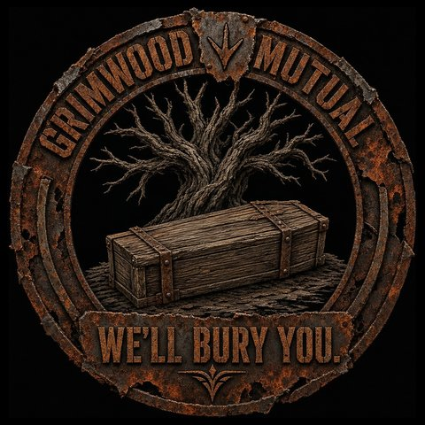

Grimwood Mutual
Assurance Society of Grimwood Hollow · “We’ll bury you.”
Certificate of Pre-Need Funeral Indemnity
Read this policy carefully. The Undertaker did.
This Certificate is issued by Grimwood Mutual (hereinafter “the Society,” “We,” “Us,” or “the Undertaker,” as the occasion and the lighting require) to the person named on the application (hereinafter “the Insured,” “You,” or, in due course, “the Deceased”) in consideration of the premium, which has been received, counted twice, and spent.
Schedule of Benefits
| Premium | 50 scrap, payable in advance, non-refundable in the event of approval, non-approval, death, weather, or regret. |
|---|---|
| Rider G-7 (Avian) | 15 scrap, optional, and for reasons that will become clear, recommended. |
| Death Benefit | 120 scrap, plus one (1) complimentary headstone. Engraving not included. |
| Review Period | 10 minutes from application. |
| Waiting Period | 60 minutes from approval. Rider G-7 observes its own. |
| Underwriting Interval | 6 hours after any paid claim, during which Your file is under actuarial review. |
| Term | Until death, payment of benefit, or the end of the world (a new map), whichever comes first. One of them will. |
Article I · Definitions
Death means the cessation of the Insured, in whole or in substantial part, as reflected by the Insured waking up somewhere else without their belongings.
Covered Cause means any cause of Death not excluded below. There are fewer of these than You were hoping.
Killing Blow means the final injury, its type, and its author, as recorded by the island itself. The island does not lie, and neither, in this one respect, do We.
Poultry means any chicken, hen, rooster, or bird the Undertaker deems sufficiently chicken.
Fowl of Title or Rank means General Cluck, his officers, and any bird holding a commission, a legend, a bounty, or a grudge.
Associate means the Insured’s teammates, friends, neighbors, and anyone who has ever waved at the Insured from a safe distance.
Device means any turret, trap, ballista, landmine, shotgun trap, flame turret, or other contraption whose loyalty was assumed.
Article II · Coverage
Subject to every Article that follows, and some that may yet be written, the Society shall pay the Death Benefit upon the Insured’s respawn following Death by a Covered Cause, enclosed in a letter of condolence addressed to the Insured personally, who will, against all odds, be available to receive it.
Covered Causes include, without limitation and without enthusiasm: scientists, heavy scientists, tunnel and underwater dwellers, bears, wolves, big cats, crocodiles, the patrol helicopter, Bradley, and any other hostility of the island not authored by the Insured, the Insured’s Associates, the Insured’s own Devices, nature, sleep, or Poultry.
Article III · Exclusions and Conditions
Review. Each application is placed under review for the Review Period. Should the Applicant expire during review, the application is declined on the grounds that the Applicant is deceased. The premium is retained as a processing fee, the processing having been considerable.
“Application declined. Applicant deceased.”
Pre-Existing Conditions. Any Death occurring within the Waiting Period is presumed to arise from a pre-existing condition, the condition being mortality, which the Insured had at the time of application and did not disclose.
Self-Inflicted Injury. Excluded: falling, drowning, voluntary departure, and the Insured’s own explosives. Gravity is not an act of God. It is an act of the Insured, who chose the ledge.
Home Security. Excluded: injury by any Device owned by the Insured or an Associate.
“We are pleased to report that it works.”
Natural Causes. Excluded: cold, heat, hunger, thirst, and radiation, all of which the Society regards as lifestyle choices.
Repose. Death while asleep, by any hand or by any means, is classified as natural causes and excluded. It is, after all, the most natural cause of all.
Unexplained Departure. A Death without a Killing Blow (the Insured simply ceasing, by the hand of the server, an administrator, or forces unknown) is held pending investigation. Such investigations have never concluded. The Society is confident they never will.
Poultry. Excluded: any incident involving Poultry, howsoever undignified.
Rider G-7 (“Supplemental Avian Incident Coverage”) reinstates coverage for common Poultry, but not for Fowl of Title or Rank, whose conduct the Society declines to insure at any price. Rider G-7 is subject to its own review and its own waiting period, and may not be purchased during an ongoing incident with a bird.
“The chicken did not wait.”
Fellow Residents. Excluded: Death caused by any other resident of the island, by any means: hand, fire, projectile, siege engine, or Device. The Society does not insure disagreements, nor arrangements between friends to have them.
Article IV · Claims
One (1) benefit is payable per policy, whereupon the policy is fulfilled, the Insured is congratulated, and a new application will not be entertained until the Underwriting Interval has elapsed.
A denied claim is marked, at no additional charge, by a temporary grave at the place of Death, standing for five (5) minutes as a courtesy to passers-by and a lesson to the Insured. The grave may not be picked up, sold, or taken home.
All correspondence, including approvals, denials, and condolences, is delivered by post to the Insured’s inbox. The Society writes beautifully and is rarely brief.
Article V · General Provisions
Termination. All policies terminate upon the end of the world (a new map). The Society is not liable for the end of the world, having priced it in.
Severability. Should any provision of this policy be found unenforceable, it shall be replaced with one less enforceable still.
Interpretation. Headings are for convenience. Words mean what the Undertaker says they mean. Ambiguities are resolved in favor of the Society, which drafted them for that purpose.
Disputes. All disputes are settled in the Chancery of Grimwood Hollow, before the Undertaker, who has never lost a case and has buried several who tried.
Approved for Burial
The Undertaker
Underwriter, Grimwood MutualThe Insured (or estate)
Grimwood Mutual is not a real insurance company, which it would like to point out is also true of several real insurance companies.